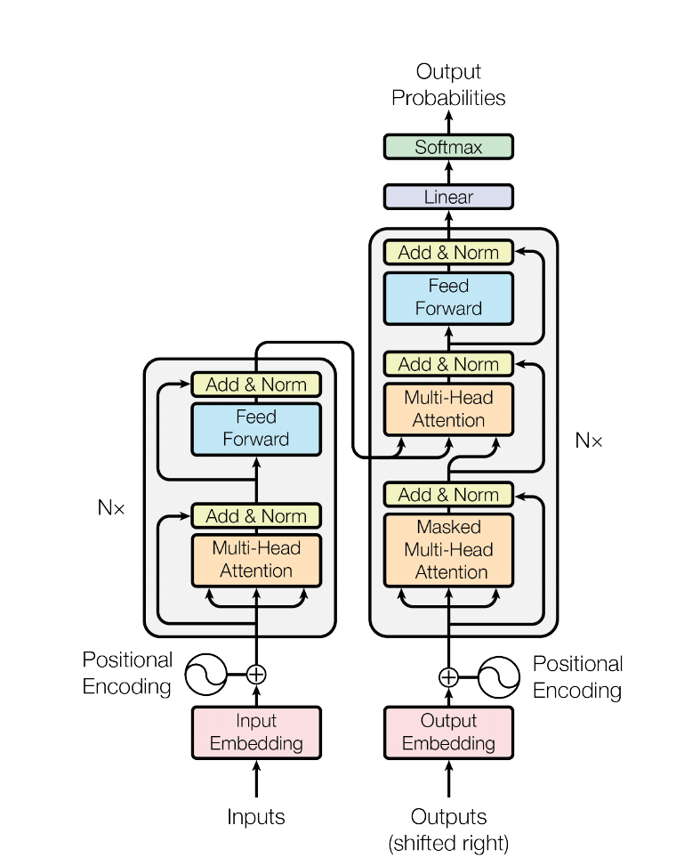

NEURIPS 2017 · ARXIV:1706.03762
The Transformer: sequence transduction based entirely on attention — no recurrence, no convolution.
Google Brain · Google Research · University of Toronto

The Transformer — model architecture
Figure 1, paper p. 3